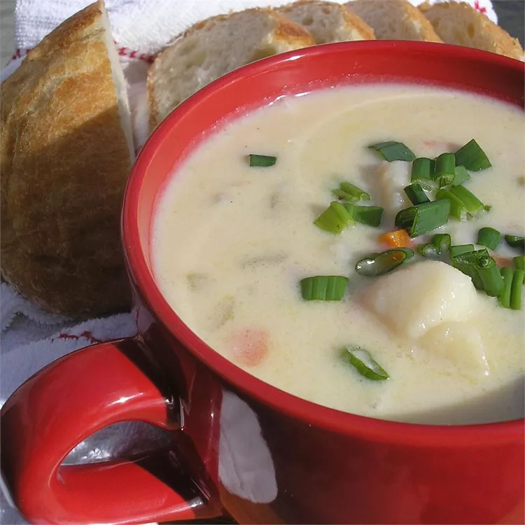

Ham and potato soup

Description
Delicious and easy to make! Versitile; You can add additional ingredients like, carrots or ham
ingredients
- 3 1/2 cups peeled and diced potatoes
- 3 1/4 cups water
- 3/4 cup diced cooked ham
- 1/3 cup diced celery
- 1/3 cup finely chopped onion
- 2 tablespoons chicken bouillon granules
- 1 teaspoon ground white or black pepper, or to taste
- 1/2 teaspoon salt, or to taste
- 5 tablespoons butter
- 5 tablespoons all-purpose flour
- 2 cups milk
Steps
- Combine potatoes, water, ham, celery, and onion in a stockpot. Bring to a boil; simmer over medium heat until potatoes are tender, 10 to 15 minutes. Stir in chicken bouillon, pepper, and salt.
- Melt butter in a separate saucepan over medium-low heat. Add flour; cook and stir until thick, about 1 minute. Whisk in milk; cook and stir until thick, 4 to 5 minutes.
- Pour milk mixture into the stockpot; cook and stir until warmed through.